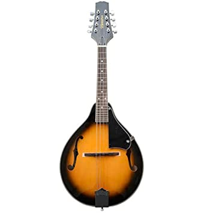

Stringed Instruments
Guitar

This guitar produces sound through the vibration of strings. The sound is produced by plucking with the fingers or with a pick on the string. The string vibrates at a certain frequency and also creates many harmonics. It is one of the famous musical instruments. These guitars are one of the major elements of today’s music. So if you are into playing guitars, the music industry is waiting for you with open arms.
Audio Clip
video Clip
Violin
The violin is the smallest and highest-pitched of the instruments in the string family. It is related to a North African instrument called a rebab (a three-stringed instrument also played with a bow drawn across the strings). Violins have been traditionally used as an accompaniment to singing and dancing. It is also an important classical solo instrument, as well as taking pride of place at the front of orchestras. When played, the violin is held under the chin and the fingers of the left hand press the strings on the neck of the instrument to produce different pitches when the string is bowed or plucked. The bow is held in the right hand and it is drawn across the strings at right angles to make them sound.
Audio Clip
Bass Guitar

The bass guitar, electric bass or simply bass, is the lowest-pitched member of the guitar family. It is a plucked string instrument similar in appearance and construction to an electric or an acoustic guitar, but with a longer neck and scale length, and typically four to six strings or courses.
The four-string bass is usually tuned the same as the double bass, which corresponds to pitches one octave lower than the four lowest-pitched strings of a guitar (E, A, D, and G). It is played primarily with the fingers or thumb, or with a pick. To be heard at normal performance volumes, electric basses require external amplification.
Audio Clip
Harp

The harp is a stringed musical instrument that has a number of individual strings running at an angle to its soundboard; the strings are plucked with the fingers. Harps can be made and played in various ways, standing or sitting and in orchestras or concerts. Its most common form is triangular in shape and made of wood. Some have multiple rows of strings and pedal attachments.
Ancient depictions of harps were recorded in current day Iraq (Mesopotamia), Iran (Persia) and Egypt and later in India and China. By medieval times harps had spread across Europe. Harps were found across the Americas where it was a popular folk tradition in some areas. Distinct designs also emerged from the African continent. Harps have symbolic political traditions and are often used in logos, including in Ireland.
Audio Clip
Mandolin
A mandolin is a stringed musical instrument in the lute family and is generally plucked with a plectrum. It most commonly has four courses of doubled metal strings tuned in unison, thus giving a total of 8 strings, although five and six course versions also exist.
There are many styles of mandolin, but the three most common types are the Neapolitan or round-backed mandolin, the archtop mandolin and the flat-backed mandolin. The round-backed version has a deep bottom, constructed of strips of wood, glued together into a bowl. The archtop, also known as the carved-top mandolin has an arched top and a shallower, arched back both carved out of wood. The flat-backed mandolin uses thin sheets of wood for the body, braced on the inside for strength in a similar manner to a guitar. Each style of instrument has its own sound quality and is associated with particular forms of music.
Audio Clip
Tambura

The tambura is a long, stringed instrument made of light hollow wood, with either a wooden or a gourd resonator. It is typically used in accompaniment with other instruments, providing a drone pitch. Some of the tamburas in the Museum’s collection are not full-sized instruments, but rather miniatures created for their aesthetic appearance. The artistic craftsmanship on the inlay in these objects is beautiful. India has a long history of creating musical instruments as decorative objects, and that tradition is represented in the Museum’s collection.
Audio Clip
Sitar

The sitar is easily India’s most famous musical instrument overseas, having been popularized in the West by George Harrison of the Beatles, who studied with Ravi Shankar, one of the greatest sitarists of the twentieth century. The sitar has its roots in both the Persian setar as well as in the vina. Like many stringed instruments used in classical Indian music, the modern sitar has sympathetic strings that sound only when one of the primary strings is struck on the same note. These strings, which are never played by the performer, resound in sympathy with the playing strings, creating a polyphonic timber that many have come to associate with India through the popularity of this instrument. It is interesting to note, however, that the addition of the sympathetic strings is a relatively recent development in Indian music starting in the late nineteenth century. The use of sympathetic strings is known to have existed in other parts of the world prior to their initial use in India.
Audio Clip
Vina

the vina is one of the most commonly depicted instruments in Indian iconography. The vina has taken many forms in both South and North India. In North India, it was called the bin or the rudravina, and was the predecessor of the sitar. It was often built of two large gourd resonators connected by a piece of bamboo, with frets held on with wax. Most of the vinas depicted in iconography are rudravinas. In the South, the vina—or saraswati vina—continues to be the most popular stringed instrument in classical music. In its basic shape, the vina is a hollow wooden stringed instrument with two gourd resonators (though there can often be more than two or sometimes only one gourd resonator). The gottuvadyam, or chitravina, is another important instrument in Karnatak music. Unlike the rudravina and the saraswati vina, the gottuvadyam has no frets and is played with a slide using a method similar to that of the Hawaiian slide guitar.